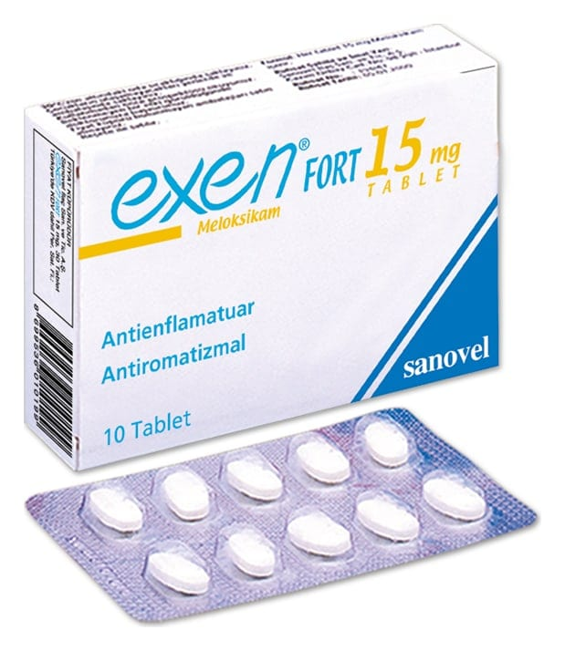

Exen Fort 15 mg Tablet, 10 Tablet

Ne için kullanılır
KT · Bölüm 1EXEN FORT, her bir tablette etkin madde olarak 15 mg meloksikam içeren hafif sarı renkli, oblong, iki yüzü çentikli tabletlerdir. Çentiğin amacı tableti e)it dozlara bölebilmektir. Böylece tablet 7.5 mg'lık e)it yarımlara bölünebilir. 10 adet tablet içeren blister ambalajlarda kullanıma sunulmu)tur. 10 ve 30 adet tablet içeren blister ambalajlarda kullanıma sunulmu)tur.
Meloksikam, eklem ve kaslardaki iltihap ve ağrıyı azaltmak için kullanılan steroid içermeyen iltihap giderici ilaçlar (non3steroidal antiinflamatuvar ilaçlar3 NSAĐĐ) grubuna dahildir.
EXEN FORT, • Kireçlenme (osteoartrit), eklemlerde ağrı ve )ekil bozukluğuna yol açan süreğen bir hastalık olan romatoid artrit ve sırt eklemlerinde sertle)me ile seyreden ağrılı ilerleyici bir romatizmal hastalık olan ankilozan spondilitin belirti ve bulgularının tedavisinde,
• Eklemlerdeki ürik asit birikimine bağlı olarak özellikle ayak ve bacaklardaki eklemlerde ani ağrı nöbetleri )eklinde seyreden akut gut artriti, akut kas iskelet sistemi ağrıları, ameliyat sonrası ağrı ve ağrılı adet görme (dismenore) tedavisinde kullanılır.